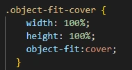
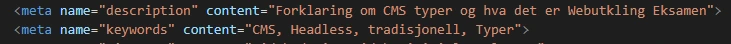
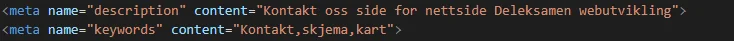
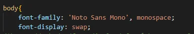
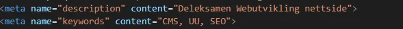
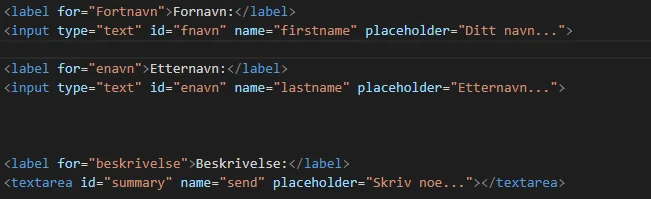
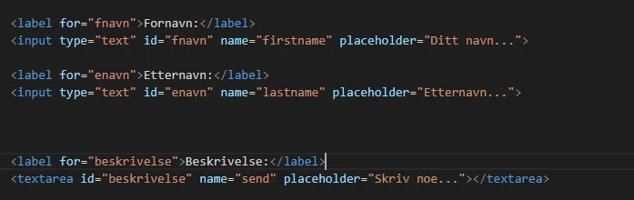
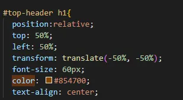

{kind=link}
Analyse
Vi har en analyse av nettsted som tar for seg SEO ,UU og heuritisk evaluering av nettsiden. Samt inkluderes en tilgjengligserklæring som tar for seg retningslinjer siden følger eller ikke.
Analysen tar for seg alle sidene på nettstedet,blant annet innholdsidene Hjem,CMS,Analyse,UU vs SEO og Kontakt oss. Analyseverktøy brukt er Google Lightouse og Webaim Wave
Resultater fra for innholdside 'CMS' på mobil(Lighthouse):

Av alle katogoriene så skårer innholdensiden ganske greit på alt utenom Best practices.

Her ser man stats på performance, kjører ganske greit. Har grei laste tid, ikke noe særlig layout shift etc.

Kode som blir anbefalt å bli lagt inline istedenfor under head tag for å få veldig liten forbedret lastetid

Velg riktig størrelse på bildene for å forbedre lastetiden

Det hadde vært greit å ha lengre cache lagre tid, så siden lastes inn raskere hvis mottaker er ofte på siden. Siden laster inn ganske greit, så minimalt med tid å hente inn her

Accessibility er det ikke mye å si på her, veldig bra resultat greit uten særlig med problemer

Facebook likeknappen har kode i javascript som er deprecated, men funker for øyeblikket som den skal. Samt er det problemer i chrome devtools i følgende javascript fra twitter, pinterest og facebook javascript. Ikke noe vi får gjort noe med.

Alt er nesten bra i SEO, mangler bare meta description tag for nettstedet. Greit å ha så crawlers og eventuelt motakkere av siden finner siden lettere.
Resultater fra for innholdside 'CMS' på desktop(Lighthouse):
*Resultater lik mobil inkluderes ikke*

Resultat på desktop er veldig lik den på mobil, bare litt større problemer i performance.

Det er litt problemer med cumulative layout shift

Ved å ha litt lik bredde og høyde på bildene, så har layeouten en bedre flyt uten bilder med forskjellige bredder og høyder
Resultater fra for innholdside 'UUvsSEO' på telefon(Lighthouse):

UU vs SEO har veldig bra resultat på mobil, bare litt som ikke er bra i best practices

Mye grønt, det liker vi å se! Er ikke mye som burde endres her.

Hvis man ønsker så kan man legge disse kodene inline, hvis man vil ha en mulig bedring på 0,73 sekunder lastetid.

Her hadde det gjort seg om bildene hadde en explicit width og height for å bedre cumulative layout shift

Accessibility er bra, ikke mye å si her.

Er kodebiter i API til facebook deling knappen som er utgått eller snart blit utgått. Ikke mye vi får gjort på det her. Oppgaven var å ha delingknappen til facebook, det er fikset.

Meta description tag mangler her igjen. Dette kommer til å være gjennomgående på alle innholdsider. Det blir fikset fortløpende.
Resultater fra for innholdside 'UUvsSEO' på desktop(Lighthouse):
*Resultater lik mobil inkluderes ikke*

UU vs SEO har veldig bra resultat, bare best practices som er dårligere på dekstop enn på mobil.

Riktig aspect ratio på bildet hadde vært på sinn plass å fikse her.

Her er problemer igjen med delingsknappene til facebook,pinterest og twitter. Ingenting vi kan gjøre når det er feil på deres side.
Sett en explicit width og height så det forbedrer cumulative layout shift
Resultater fra for innholdside 'Kontakt oss' på mobil(Lighthouse):

Dette er helhets resultatet til innholdsiden. Alt er greit utenom småting i performance og best practices.

Her er det mye av de samme problemene som på de andre innholdssidene.

Her er det mye av de samme problemene som på de andre innholdssidene.

En viktig ting som skal forbedres her er at tekst er snylig mens webfontene driver å blir lastet inn. Skal fikses fortløpende

Heading tag er i litt feil rekkefølge, h3 hopper over h2 eller feks h4 etter h3. Skal fikses fortløpende

Som på andre innholdsider så mangles det meta description tag. Også feil i størrelse på knappene til googlemaps kartet som er lagt til på siden. Dette er design laget av google selv.
Resultater fra for innholdside 'Kontakt oss' på desktop(Lighthouse):
*Resultater lik mobil inkluderes ikke*

Dette er helhets restultatet for innholdsiden. Mye som er veldig bra utenom småting i Best Practices som går igjennom på alle innholdsidene. Så den delene inkluderes ikke nå igjen nedunder.
Resultater fra for innholdside 'Hjem' på mobil(Lighthouse):

Dette er resultatet for hjem på mobil enhet, resultatet er ikke like bra som på desktop. Dette skal vi se mer på.

Her er det mye av de samme feilene som andre innholdsider.

Noe som burde fikses her er jpeg som burde byttes til webp filformat for raskere innlastningstid.

Her er det for det meste cache som kunne blitt gjort med for raskere innlastningstid ved flerbesøkende på siden.

Her kan header rekkefølgen bli fikset opp i til en mer logisk rekkefølge.

Korrekt aspect ratio hadde vært greit å fikset opp i disse bildene.

Meta description mangler, ellers ganske greit her.
Resultater fra for innholdside 'Hjem' på desktop(Lighthouse):
*Resultater lik mobil inkluderes ikke*

Resultat for Hjem innholdsiden for desktop, ganske lik mobil så ikke mye å si på det.
Resultater fra for innholdside 'Hjem' (Wave):

1 lavkontrast feil i headerbildet på innholdsiden som treger å bli fikset,
2 bilder som har samme alt tekst,
2 ganger hvor heading tag blir hoppet over i rekkefølge eller rot,
6 tilfeller hvor flere linker på samme innholdside leder til samme sted.
Resultater fra for innholdside 'CMS' (Wave):

1 tilfelle hvor bilder har samme alt tekst,
3 hvor det kanskje kunne blitt brukt en heading tag,
3 tilfeller hvor flere linker på samme innholdside leder til samme sted.
Resultater fra for innholdside 'UUvsSEO'(Wave):

2 tilfeller hvor bilder har samme alt tekst,
3 ganger hvor heading taggen kanskje kunne blitt brukt,
3 tilfeller hvor flere linker på samme innholdside leder til samme sted.
Resultater fra for innholdside 'Kontakt Oss'(Wave):

3 manglene form label
1 tilfelle hvor heading tag blir hoppet over i rekkefølge
3 tilfeller hvor flere linker på samme innholdside leder til samme sted,
1 små tekst bruk
2 tilfeller med samme title
1 mulig header kunne blitt brukt
Heuristisk Evaluering:
Nå skal det tas en heuristisk evalueriing, så ingen digitale analysevertøy nå. Nå skal sides ses på og vurderes etter 10 generelle prinsipper for bra grafisk design
1. Synlighet og system status: Er det snylig og innlystende for brukeren hva som skjer utifra deres handlinger? Trykker de på den knappen er det veldig synlig og innlysende hva resultatet av brukerens handlinger? Det kravet stiller siden. Trykker du på feks 'Kontakt oss' kommer du til en side med stor title som sier kontakt oss. Trykker du på hjem så kommer du tilbake til forsiden.
2. Design matcher den virkelige verden: Om designet er laget slik at brukeren forstår, ikke noen ord eller symboler som er vanskelig å forstå. Brukeren skal ha stor forståelse av hva ord og hva knappen betyr. Det er brukt bra med ord og knapper som gjør det lett for motakkeren å skjønne her.
3. Konsistens og standarder: Siden har grei konsistens. Den holder seg tro til design, så det skal være lett å skjønne seg på siden hvia man har lært seg siden en gang.
4. Bruker frihet og kontroll: Det er ingen handlinger som er noe problemer å trekke seg utfra. Største grunn er vel at siden er veldig simpel og skal ikke plassere motakkeren i en vanskelig eller misfortående posisjon. Friheten er her.
5. Error motarbeidelse: Er ikke noen særlig system som sender error melding hvis man har gjort noe feil på siden. Men alt funker som det skal så error melding har ingen grunn til å komme opp.
6. Gjenskjenne istenfor å huske: Lett å gjenkjenne knapper og funksjoner, ingen behov for å måtte huske design av siden for å kunne bruke den bra.
7. Fleksibilitet og effektiv bruk: Om det er lagt inn funksjoner som gjør det effektivt for erfarne og både mindre erfarne brukerer. Vil si det ikke er noen særlig sånne funksjoner på denne siden. Vi har en simpel side som gjør det den skal ganske simplet. Det er ikke noen særlig behov for funksjoner for å gjør prossessen på siden raskere.
8. Autentisk og minimalistisk design: Siden har ikke noe særlige ting som er innrelevant til innholdet som er tilstede. Siden er ikke ubehaglig å se på, simpel og fin side
9. Hjelpe brukere forstå, gjøre diagnose og komme seg fra errors: Er ikke mye rom på siden for error. Men skulle vært lagt til en error melding hvis kanskje det er noe feil i kode som. Men vi har lagt til en kontakt skjema hvis det skulle være en feil de vil raportere som vi kan fikse
10. Hjelp og dokumentasjon: Er tydlig informasjon som hjelper brukeren gjøre det de vil på siden.
CMS: 4 block render-blocking-resources
1 ubrukt javascript
3 bilder som trenger forbedret størrelse
14cacheproblemer
1 deprecated API
Problemer med cookies fra deleknapper
CMS:
3 bilder trenger explicit width og height
UUvsSEO:
1 bilde fiks aspect ratio
2 deprecated APIs
4 explicit width og height på bilder
CMS:
la til css slik at bilder fikk bedre størrelse og aspect ratio
meta description tag er lagt til samt meta keywords
UUvsSEO:
Brukt css for bilder for å fikse aspect ratio og den har bestemt height og width
Meta tag for description og keywords er lagt til
UUvsSEO: 4 render-blocking-resources
Ubrukt javascript
4 explicit height og width på bilder
2 deprecated APIs
Manglende meta descritpion tag
Hjem: samme feil som mobil
Kontakt oss: Logo på siden byttet fra jpeg til manglet webp
La til meta tag descriptionog meta tag keywordstil siden
font-display: swap; ble lagt til slik at system font er der helt til nettside fonten har blitt lastet inn
Hjem: La til meta tag description og meta keywords tag
Brukt css for å fikse aspect ratio og størrelse på bilde
Kontakt Oss:
Render render-blocking-resources
Ubrukt javascript
Fjerne Ubrukt CSS
Tekst trengs å være synlig mens font lastes inn
1explicitwidth and weight bilde
fiks i 1 heading rekkefølge
Meta description tag mangler
Hjem:
Ubrukt javascript
Bruke webp istedenfor jpeg 1 bilde
1 bildehight and weight
1 tilfelle heading rekkefølge feil
Aspect ratio feil 3 bilder
Manglende meta description
Wave
Kontakt oss: 14 gule errors, 4 røde errors
Hjem: 10 gule errors, 1 rød error
CMS: 7 gule errors
UU vs SEO: 8 gule errors
Wave:
Før
Etter
Kontakt Oss: La riktig ordentlig label tag fornavn label, etternavn label og beskrivelse label
Hjem: Forbedret contrast på HJEM tekst for å møte AAA krav(#854700)
byttet ut 1 bilde fra jpeg til webp for bedret lastetid